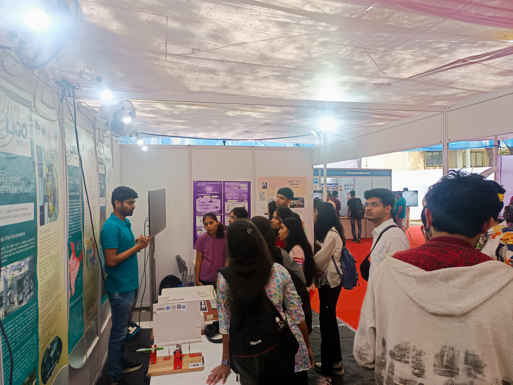
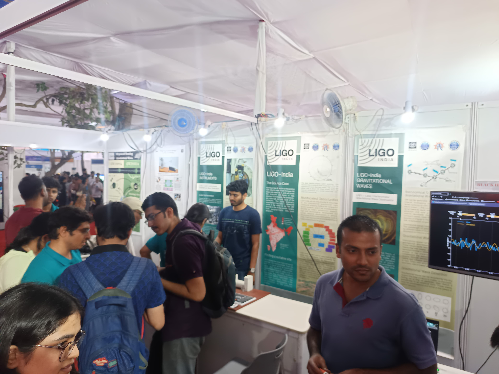
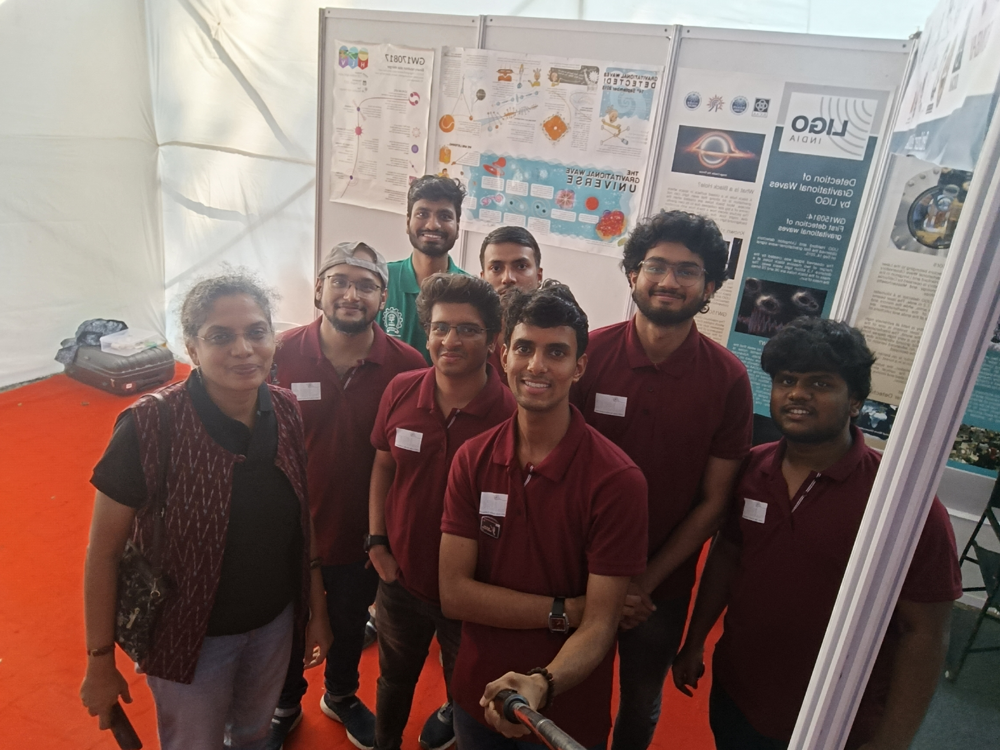

Public Engagement
Outreach Activities
Making the “INVISIBLE” heard
The first rule of Astrophysics is, "You do talk about Astrophysics".
LIGO-India TechConnect 2025
IIT Bombay

Planting nerd seeds, harvesting lifelong wonders....

Team meeting or covert nerd summit???

Posters doing more heavy lifting than muscles...
LIGO-India TechConnect 2024
IIT Bombay
Video
Proof that science does attract mass...
Video
Q&A session with an enthusiastic kid and her parent. Yes, that was a good question...

Red shirts? Ofcourse cause we love "RED"-"SHIFTs"...

Smiles powered by coffee and gravitational waves...

Engaging professionals from other fields. Different fields, same universe...